OctopusScheduler 取扱説明書
クイズ大会とジャックポット抽選会を、迷わず進めるための手引きです。画面の赤い枠と番号が、説明の番号に対応しています。画像をクリックすると拡大します。
はじめに
この章でできることOctopusScheduler でできること、3つの画面の関係、当日の流れがわかります。
OctopusScheduler は、忘年会や懇親会などでクイズ大会とジャックポット抽選会を行うためのWebアプリです。パソコンやスマホのブラウザだけで使えます。インストールは不要です。
登場する3つの画面
ポイント会場スクリーンと手元の操作画面は、同じ管理者アカウントでログインします。参加者は、受付で配られるQRコードを読み取るだけで入れます。
当日の全体の流れ
- 準備参加者のアカウントと受付QR、景品、クイズ、画面の文言を前日までに整える
- 受付参加者がQRを読み取ってログイン。会場PCに「N人が参加中」と出る
- エントリー参加者が「エントリーする」を押すと、会場スクリーンに顔写真が並ぶ
- クイズ手元の「次へ」で、出題から結果発表まで進める
- ジャックポット当選者を決め、景品の抽選を行う
- 終了結果を確認してイベントを終える
注意本番の前に、必ず「リハーサル(デモ)」を1回行ってください(第4章)。
1. 参加者の方へ
この章でできることスマホでログインし、エントリー・クイズ回答・結果の確認ができます。
1-1. ログインする
受付で渡されたQRコードを、スマホのカメラで読み取ってください。自動でログインされます。QRがない場合は、配られたIDとパスワードを入力します。
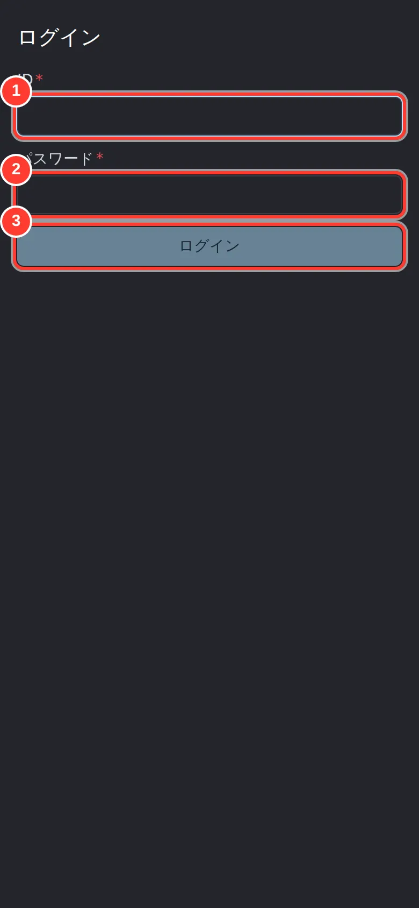
- 1受付でもらったID
- 2パスワード
- 3ログインする
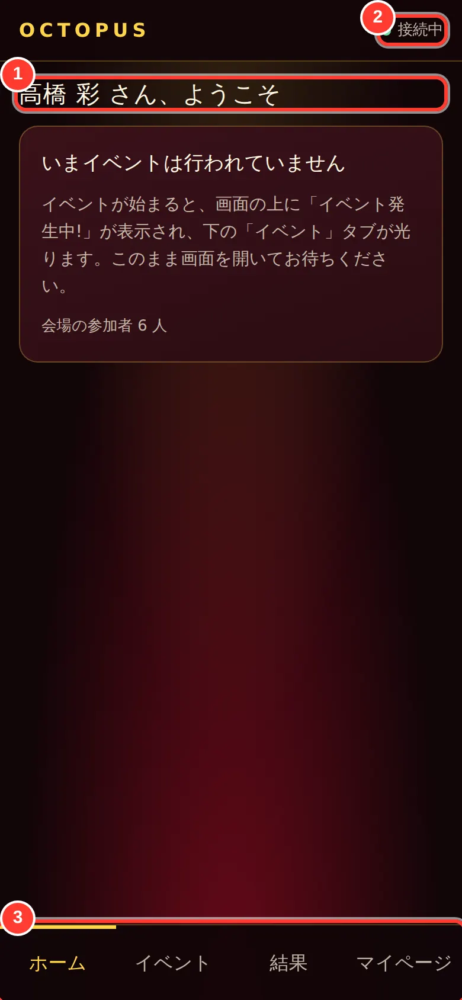
- 1あなたの名前
- 2会場とつながっていれば「接続中」
- 3下のタブで画面を切り替える
ポイント上の「接続中」が出ていれば、会場とつながっています。イベントが始まるまで、この画面を開いたままお待ちください。
1-2. エントリーする
司会者がエントリー受付を始めると、画面に大きな丸いボタンが出ます。タップすると「エントリー済み」になり、会場のスクリーンにあなたの顔写真が表示されます。
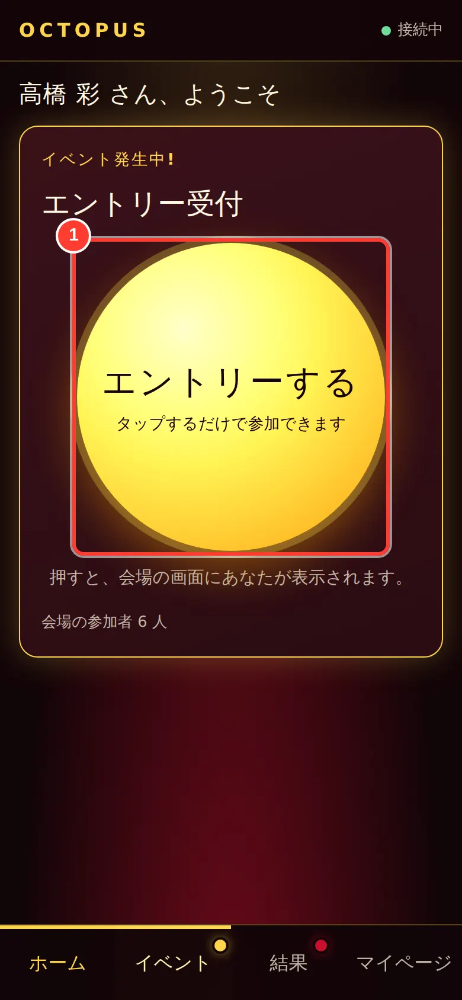
- 1タップしてエントリーする
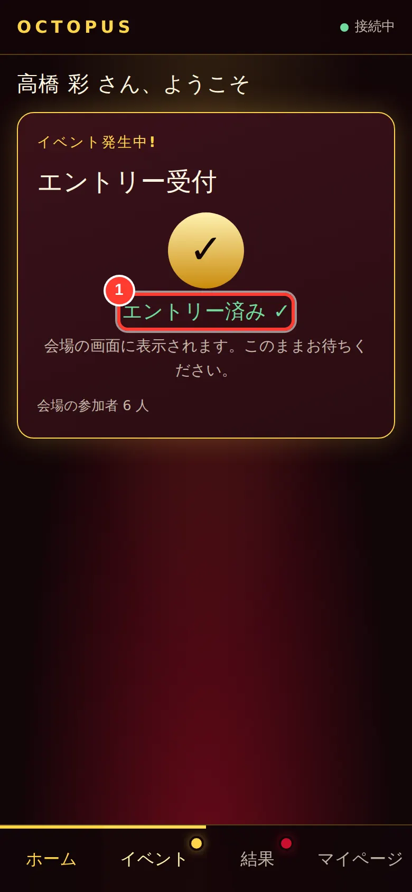
- 1「エントリー済み」になれば完了
1-3. クイズに答える
問題と選択肢が出ます。残り秒数が0になる前に、答えをタップしてください。受付中は選び直せますが、最後に選んだものが回答になります。
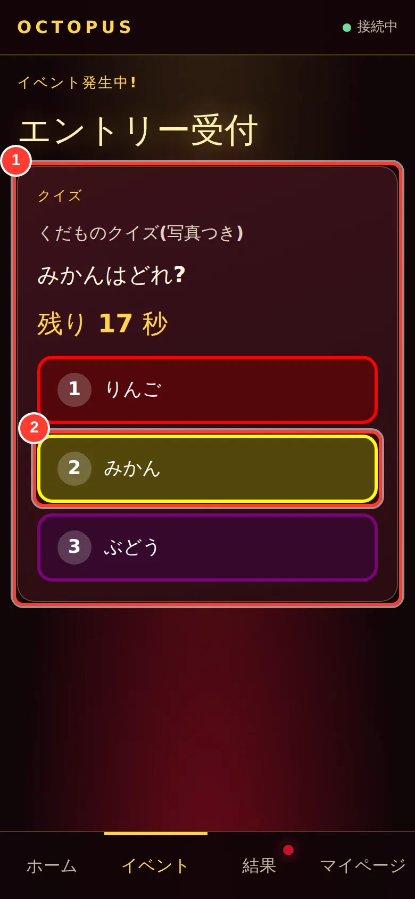
- 1問題と選択肢が出る(残り秒数つき)
- 2答えをタップ
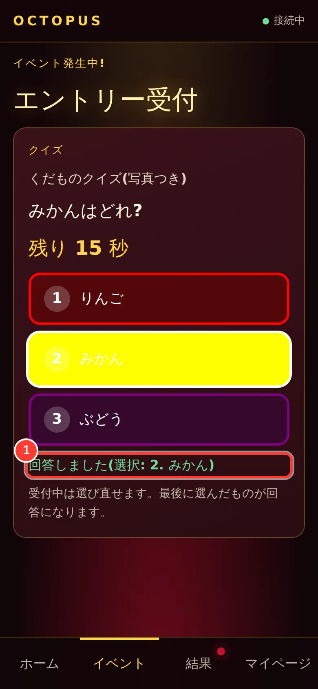
- 1回答済み(変更はできない)
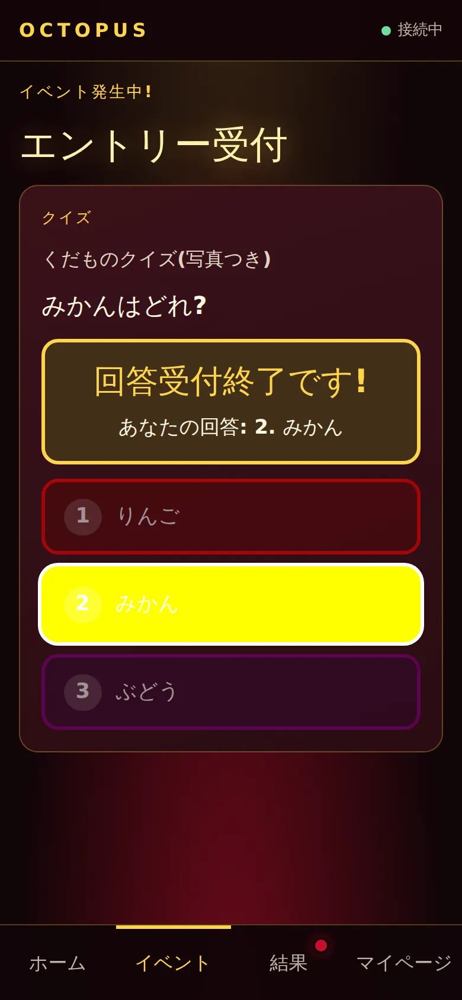
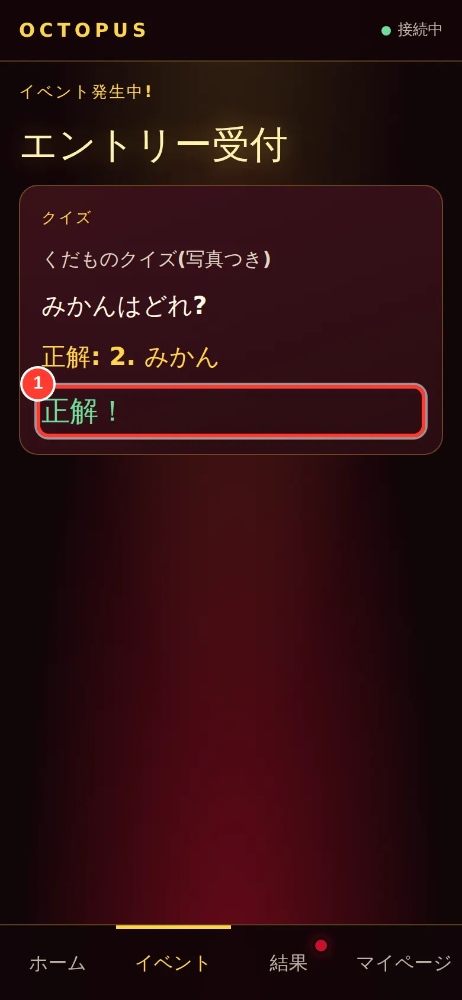
- 1正解・不正解がわかる
順位の発表中は「会場の画面をご覧ください」と出ます。会場のスクリーンで確認しましょう。
1-4. ジャックポット抽選
エントリーした人の中から抽選されます。当選すると、スマホに紙吹雪つきの「あたりました!」が出ます。会場の前に出てきてください。
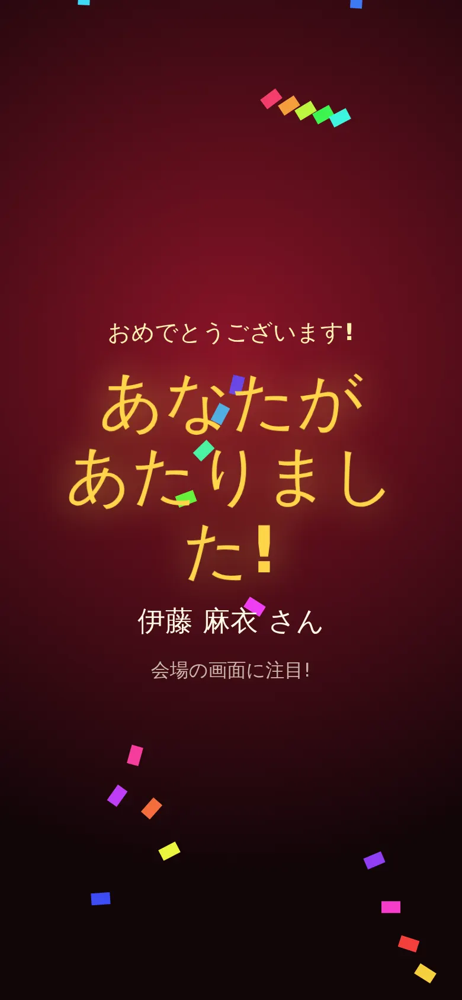
1-5. 結果を見る・ログアウトする
下の「結果」タブで、クイズの順位と、ジャックポットの当選履歴を見られます。自分の当選は目立つ表示になります。
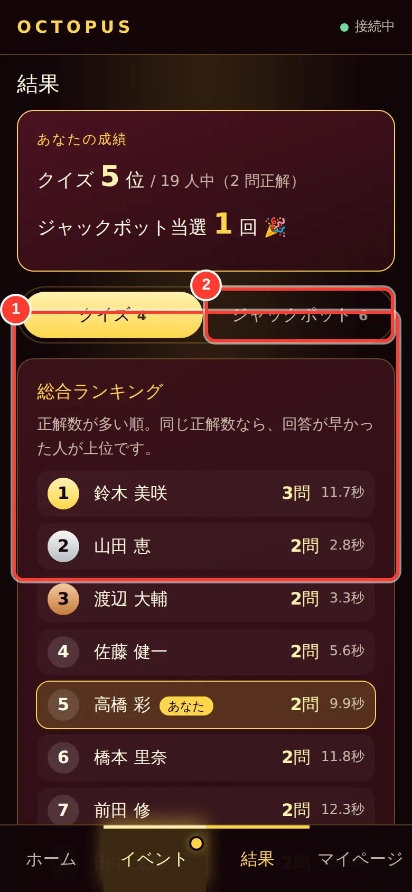
- 1出題ごとの順位・正解
- 2ジャックポットの結果に切り替え
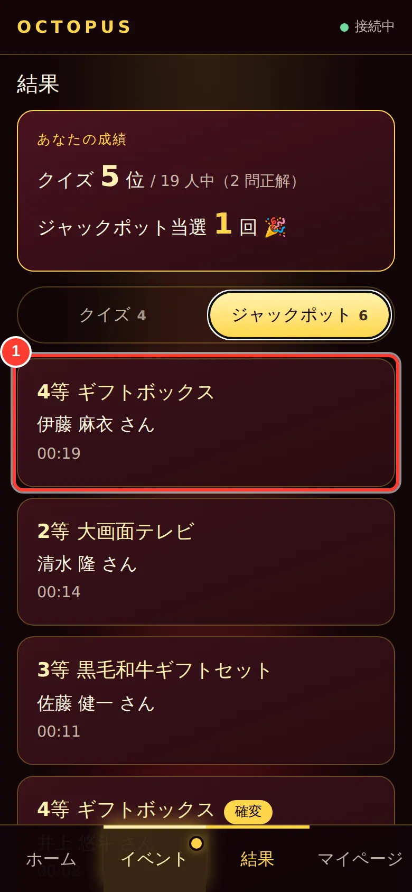
- 1当選の履歴(自分が当たると強調される)
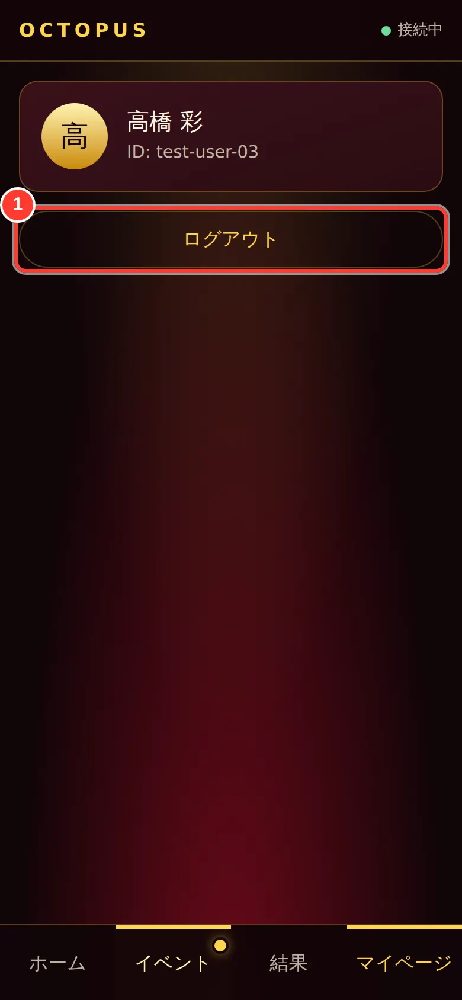
- 1使い終わったらログアウト
1-6. 困ったとき
- 「接続中」にならない → 画面を引き下げて再読み込みしてください。
- ログインできない → IDとパスワードを確認し、それでも入れなければ受付に声をかけてください。QRの再発行ができます。
- エントリーボタンが出ない → 受付が始まっていないか、すでに締め切られています。
2. 管理者:事前準備
この章でできること参加者の登録、景品・メンバー・クイズ・画面の準備ができます。
準備は、管理者のホーム画面から行います。管理者アカウントでログインすると表示されます。

- 1イベントを開催・進行する(当日はここから)
- 2クイズの問題や選択肢をつくる
- 3景品・メンバー・画面を整える
- 4アカウント・素材・ショートカット
2-1. 参加者を登録して受付QRを印刷する
「設定」→「アカウント」タブを開きます。参加者を1人ずつ「アカウント追加」で登録するか、すでに登録した人に受付QRを発行します。

- 1参加者(や管理者)を1人ずつ追加する
- 2受付QRをまとめて発行して印刷する
- 3QRをなくした人に再発行する

- 1ログインIDを入れる(英数字)
- 2表示される名前を入れる
- 3保存する
登録しただけの人(QR未発行)がいると、「未発行の参加者に受付QRを発行」が押せるようになります。

- 1未発行の人にまとめてQRを発行する

- 1印刷して参加者に配る(QRはここでしか表示されない)
注意QRコードは、この画面を閉じると二度と表示できません。必ず印刷してから閉じてください。なくした場合は「QR再発行」を使います(以前のQRは使えなくなります)。QRは本人専用です。写真を共有しないよう参加者に伝えてください。
2-2. メンバーの写真を登録する
「ジャックポットの準備」→「メンバー」タブを開きます。顔写真は、会場スクリーンのエントリーや抽選に映ります。1人ずつ登録するか、CSVと写真フォルダでまとめて取り込めます。

- 1メンバーを1人追加する
- 2取り込み用のCSVひな形をダウンロード
- 3CSVと写真フォルダをまとめて取り込む
- 4写真・当選しやすさを編集する

- 1写真ファイルを選ぶ
- 2当選しやすさ(1〜100)
- 3保存する
まとめて取り込む場合:「書式CSV」で雛形を受け取り、「名前,ランク,写真ファイル名」を入力します。写真を1つのフォルダに入れ、CSVと一緒に選んでください。

- 1CSVファイルを選ぶ
- 2写真が入ったフォルダを選ぶ
- 3取り込みを始める
ポイント「当選しやすさ」は1〜100です。全員が同じ値なら、全員が同じ確率で当選します。
注意メンバーの写真は、設定した端末(ブラウザ)に保存されます。写真を設定したパソコンを、そのまま会場PCとして使ってください。
2-3. 景品を登録する
「景品」タブで、景品の名前・画像・抽選アニメーションを設定します。「データ取込」でまとめて登録することもできます。

- 1景品を追加する
- 2CSVと画像をまとめて取り込む
- 3景品の内容を編集する

- 1景品の名前
- 2抽選アニメーション(ルーレット/スロット)
- 3景品画像(ルーレットなどに出る)
- 4当選したときに大きく出る画像
ポイント「画像1・2」は抽選中に出る絵、「当選画像1・2」は当選したときに大きく出る絵です。BGMも景品ごとに選べます。

- 1画像・音声を追加する
2-4. クイズを作る
ホームの「クイズの準備」を開きます。「新規クイズ追加」で、問題・回答時間・選択肢・正解を入力します。

- 1クイズを1問追加する
- 2編集する
- 3この問題だけ画面で確認(プレビュー)
- 4削除する

- 1クイズの名前
- 2回答できる秒数
- 3出題する文章
- 4正解の選択肢
選択肢は「選択肢を追加」で1つずつ入れます。文字だけでも、写真つきでも作れます。

- 1選択肢の文字
- 2写真をつけたいときに選ぶ(なくてもよい)
- 3ボタンの色
- 4保存して一覧に戻る

- 1正解した人に贈る景品名(任意)
- 2選択肢を追加する(2〜8個)
- 3保存する

- 1追加したクイズが一覧に出る
注意保存する前に「回答(正解)」の欄が正しいか、もう一度確認してください。

- 1クイズの参加者名簿を追加する
2-5. 抽選会の画面を整える
「ジャックポットの準備」→「画面設定」では、会場スクリーンに出る文章・画像・BGMを設定します。変更したら必ず「保存」を押します。

- 1BGM(曲)を選ぶ
- 2表示する文章・画像を追加する
- 31つずつ内容を編集する
- 4変更したら保存を押す

- 1説明の文章・画像を追加する
- 2保存する

- 1デモ中に流す曲
- 2保存する

- 1抽選中に流す曲
- 2止まるまでの秒数
- 3確変(連続当選)の設定
- 4設定のままテストする

- 1最終結果の曲

- 1エンディングの文章・画像

- 1本番前に結果を空に戻す
2-6. 設定の他のタブ
ふだんは触らなくて構いません。画像・音声の素材(アセット)、名簿(メンバー)、イベントの実行、キーボードのショートカットを管理する場所です。

- 1名簿に追加する

- 1画像・音声を登録する

- 1イベントを追加する
- 2選んだイベントを実行する
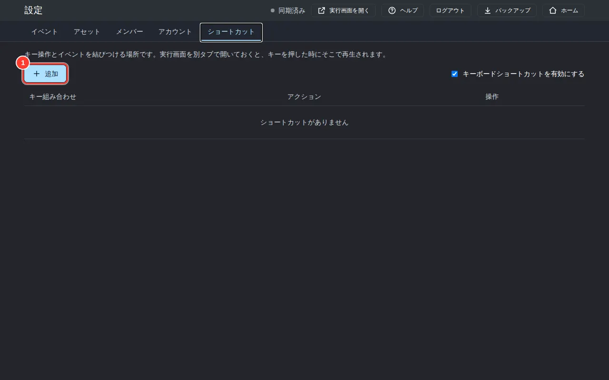
- 1キーとイベントを結びつける
2-7. 同期の状態と詳細を確認する
設定した内容は、この端末に保存されると同時に、自動でサーバーへ送られます。別の端末で変えた内容も、自動で取り込まれます。画面の右上(ヘッダー)の表示で、いまの状態を確かめられます。
- 同期済み … 送るものも取り込むものも残っていません。
- 同期中... … 送信または取り込みをしています。
- 同期エラー(押すと詳細) … 通信などの失敗で、送れなかったものがあります。次の同期で、自動でもう一度送ります。
この表示は押せます。押すと「同期の状態」が開き、失敗した対象と理由、そして他の端末の変更を反映した記録(直近50件。この画面を開いている間だけ残ります)を、時刻つきで確かめられます。ふだんは見なくて構いません。「値が知らないうちに変わった」「保存したはずなのに反映されない」ときに開いてください。

- 1押すと、同期の詳細が開く

- 1他の端末の変更を反映した記録
- 2送信に失敗した記録(対象と理由)
ポイント送信の途中で別の値を保存しても、あとの値が残り、次の同期で送られます。
注意ゲームの設定(画面設定・景品・名簿・クイズなど)は、一覧全体を1つの単位として「新しく保存したほうが残る」しくみです。2台でほぼ同時に別の項目を編集すると、あとから保存したほうの一覧が残り、先に保存した端末の変更は取り込まれません。先に保存した端末の詳細には「他の端末の変更を反映」と記録されるので、何が起きたかを確かめられます。同じ設定は、できるだけ1台で編集してください。
3. 管理者:当日の進行
この章でできること会場PCを準備し、手元の操作画面のボタンで、クイズとジャックポットを進められます。
3-1. イベントを始める(セッション)
ホームの「イベントを開催・進行する」を開きます。「今すぐイベントを開催する」を押すと、参加者への公開と操作画面の起動まで一度に行われます。会場のPCでは、一覧の「ホストとして開く」を押してください。

- 1ふだんはこのボタン1つで開催できる
- 2名前をつけて作りたいとき(任意)
- 3リハーサル用ならチェック
- 4会場のPCで押す(投影する画面)
- 5手元のスマホ・PCで押す(進行する画面)
- 6参加者への公開を切り替える
- 7イベントを終える
ポイント同時に公開できるイベントは1つです。参加者はログインすると、公開中のイベントに自動で入ります。
セッション名は作成後に変更できません。名前を間違えたときは、新しく作り直してください。
3-2. 会場PCの画面
会場PCで「ホストとして開く」を押し、プロジェクターにつなぎます。ブラウザを全画面(F11キー)にしてください。参加者がログインすると、人数が増えていきます。

- 1イベント名
- 2ログインして入った人数
3-3. 手元の操作画面
司会者の手元のスマホで「操作する」を開きます。「始める」の3つのカードから、行うものを選びます。

- 1いまの状態(ホスト接続・参加者数)
- 2出すクイズを選ぶ
- 3クイズを始める
- 4ジャックポット抽選を始める
- 5エントリー受付だけを始める
注意会場PCの画面が開かれていないと「ホストが不在です」と出ます。会場PCで「ホストとして開く」を行ってください。
3-4. エントリーを受け付ける
「エントリー受付を始める」を押すと、参加者のスマホにエントリーボタンが出ます。会場スクリーンには、エントリーした人の顔写真が並びます。


- 1いまできる操作
3-5. クイズを進める
クイズを選んで「このクイズを始める」を押します。あとは、大きなボタンを押すたびに、次の画面へ進みます。
- イントロ(「これからクイズが始まります」)
- 問題の表示と回答受付
- 「受付を締め切る」を押す(時間が来ても自動で締め切られます)
- 正解発表
- 結果発表(順位)


- 1押すたびに次の画面へ進む
- 2いまの進行状況

- 1全員答えたら「受付を締め切る」
- 2回答が何人集まったか


ポイント「次へ」はキーボードのEnterキーでも押せます。
3-6. ジャックポットを進める
「ジャックポットを始める」を押します。オープニング、エントリー、説明と進み、「抽選を始める」で本抽選に入ります。


抽選は「次へ(START)」→「止める(STOP)」の順に押します。顔写真が回り、止まると当選者が発表されます。


- 1「次へ」で始まり、「止める」で止まる

- 1回っている間は「止める」を押す
当選者が出ると、続けて景品の抽選(ルーレットまたはスロット)が始まります。回っている間は「演出中…」と出て押せません。止まったら「次へ」で、次の抽選に進みます。


ポイント景品の抽選では、当選した本人のスマホに「止める」ボタンが出る場合があります。その場合は、本人にタップしてもらうと盛り上がります。
3-7. 終了と結果の確認
すべての抽選が終わったら、「詳細な操作」を開き、「ジャックポット: 結果」「ジャックポット: エンディング」で会場スクリーンを切り替えます。

- 1ふだんは閉じておく。画面を直接切り替えたいときだけ開く


最後に、セッション一覧の「終了」を押すとイベントが終わります。結果は「ジャックポットの準備」→「抽選結果」でも確認できます。
4. リハーサル(デモ)のやり方
この章でできること本番と同じ流れを、本番の結果を残さずに試せます。
- セッション一覧で、「デモ(リハーサル)として作る」にチェックを入れてセッションを作る。
- 自分のスマホで、受付QRからログインし、本番と同じ手順で進める。
- 会場のプロジェクター・音量・文字の大きさを確認する。

- 1リハーサル用の抽選をその場で試せる
管理画面の「デモ実行」を押すと、その場でジャックポットの演出だけを試せます。

注意リハーサルの後は、「抽選結果」タブの「結果をリセット」で当選履歴を空にしてから、本番に臨んでください。
5. 困ったときのQ&A・用語集
この章でできることよくあるトラブルの対処と、用語の意味がわかります。
- 参加者の画面が「接続中」にならない
- イベントが「ポータルに公開」されているか、セッション一覧で確認してください。参加者側は再読み込みで直ることが多いです。
- 「ホストが不在です」と出る
- 会場PCで、セッション一覧の「ホストとして開く」を押してください。
- 顔写真が出ない(頭文字だけになる)
- 写真を設定したパソコンとは別のパソコンを会場PCにしていませんか。写真は設定した端末に保存されます。
- QRコードをなくした・使えない
- 設定→アカウントで「QR再発行」を押し、印刷し直してください。以前のQRは使えなくなります。
- クイズの正解が違っていた
- クイズの編集で「回答(正解)」を直して保存します。
- 画面を変更したのに反映されない
- 画面設定は「保存」を押して初めて反映されます。
用語集
- セッション
- 1回のイベント(1つの会)のこと。
- ホスト
- 会場のプロジェクターに映す画面。
- 操作画面(コンソール)
- 司会者が手元で進行する画面。
- ポータル
- 参加者がスマホで見る画面。
- 受付QR
- 参加者がログインするためのQRコード。
- エントリー
- 参加者が「参加します」と押すこと。
- 確変
- 運がよいと続けて当選できる演出。
- アセット
- 画像や音声などの素材。
画像クレジット
この説明書の画面は、架空のテストデータで撮影しています。写っている人物写真・景品画像・クイズ画像は、商用利用が可能なフリー素材です。
- 人物写真(Pexels License): Pexels の写真 ID 1043471, 1130626, 1181690, 1222271, 1239291, 1681010, 2182970, 220453, 2379004, 415829, 733872, 774909, 91227, 614810, 938639, 697509(https://www.pexels.com/license/)
- Wikimedia Commons(CC0 / パブリックドメイン): 「Wagyu forefillet - Flat Iron 2026-02-24.jpg」「Bouquet (flowers).jpg」「Washington-Dulles-Airport-Jet-Bridge-1.jpg」「Rice-cooker.jpg」「Flat screens for sale.JPG」「Princess Mary's Gift Box - Christmas 1914 (10132776506).jpg」「Beautiful red apple 01.jpg」「Orange Fruit (Unsplash).jpg」「A bunch of grapes on a vine.jpg」